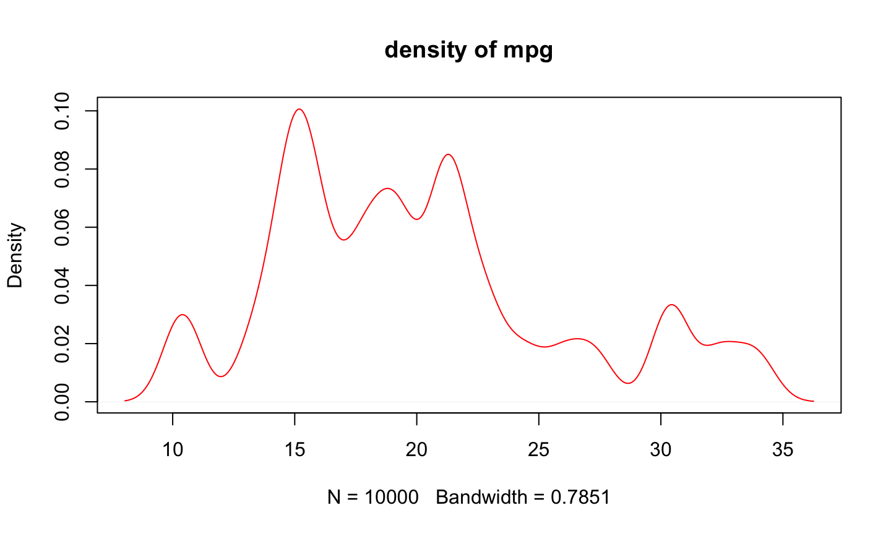

Ch01：表格型文件的輸入與輸出
讀取表格檔案
- 下載範例資料 http://johnsonhsieh.github.io/dsp-introR/data/hsb.csv
- 利用
read.csv讀取csv檔 (一種以逗點分隔欄位的資料格式)
# 可以使用R指令來下載
url <- "http://johnsonhsieh.github.io/dsp-introR/data/hsb.csv"
download.file(url, destfile = "hsb.csv") # 把檔案另存成hbs.csv
dat <- read.csv("hsb.csv")
head(dat)
id sex race ses schtyp prog read write math science socst 1 70 male White 1 public general 57 52 41 47 57 2 121 female White 2 public vocational 68 59 53 63 61 3 86 male White 3 public general 44 33 54 58 31 4 141 male White 3 public vocational 63 44 47 53 56 5 172 male White 2 public academic 47 52 57 53 61 6 113 male White 2 public academic 44 52 51 63 61
讀取表格檔案
讀取自己電腦裡的csv檔
# 方法1. 透過介面選擇檔案所在路徑
path <- file.choose()
dat <- read.csv(path)
# 方法2. 自行輸入檔案所在路徑
path <- "/Volumes/LEEF SURGE/LearnR/hsb.csv"
dat <- read.csv(path)
# 方法3. 自行輸入檔案相對路徑
dat <- read.csv("hsb.csv")
輸出表格檔案
利用write.csv將data.frame格式的R物件另存成csv檔
write.csv(dat, "hsb_new.csv", row.names=FALSE, quote=FALSE)
淺談路徑設定
getwd查詢目前所在的資料夾路徑 (絕對路徑)setwd設定所在的資料夾路徑
(Session -> Set Working Directory -> Choose Directory)- 檔案 (檔案路徑 file directory) vs. 資料夾 (工作路徑 working directory)
getwd()
[1] "/Volumes/Transcend/DSP/DSP-training/R爬析(中研院社會所)"
dat <- read.csv("hsb.csv")
排解疑難 - 常見的讀取錯誤1
路徑錯誤
path <- "wrong_file_path" dat <- read.csv(file = path)
Error in file(file, "rt") : 無法開啟連結 此外: Warning message: In file(file, "rt") : 無法開啟檔案 'wrong_file_path' ：No such file or directory
- 絕對路徑 -> 確認檔案是否存在
- 相對路徑 -> 利用
getwd了解R 當下的路徑位置
排解疑難 - 常見的讀取錯誤2
格式錯誤
path <- "hsb.csv" dat <- read.csv(file = path, header = TRUE, sep = "1")
Error in read.table(file = file, header = header, sep = sep, quote = quote, : more columns than column names
- 利用其他編輯器確認分隔符號
- 確認每列的資料的欄位是正確的
- 必要時，請用其他文件編輯器校正欲讀取的檔案
排解疑難 - 常見的讀取錯誤3
編碼錯誤
url <- "http://johnsonhsieh.github.io/dsp-introR/data/dsp-gift-2013-big5/%E8%B2%B7%E8%B3%A3st_A_10109_10109.csv"
dat <- read.csv(url)
Error in make.names(col.names, unique = TRUE) : 無效的多位元組字串於m
- 查詢檔案的編碼
- 常見的中文編碼有UTF-8和BIG-5
# 利用`fileEncoding`參數選擇檔案編碼 - big5 / utf8 dat2 <- read.csv(url, fileEncoding = "big5")
讀取其他軟體資料集
# install.packages("foreign") # 安裝R套件 foreign
library(foreign) # 載入套件
cars <- read.spss("data/Cars.sav", to.data.frame = TRUE)
milk <- read.dta("data/p004.dta")
# head(cars)
# head(milk)
讀取其他軟體資料集
- For SAS datasets, use the
sas7bdatpackage - airline: airline.sas7bdat
# install.packages("sas7bdat")
library(sas7bdat)
airline <- read.sas7bdat("data/airline.sas7bdat")
head(airline)
YEAR Y W R L K 1 1948 1.214 0.243 0.1454 1.415 0.612 2 1949 1.354 0.260 0.2181 1.384 0.559 3 1950 1.569 0.278 0.3157 1.388 0.573 4 1951 1.948 0.297 0.3940 1.550 0.564 5 1952 2.265 0.310 0.3559 1.802 0.574 6 1953 2.731 0.322 0.3593 1.926 0.711
Ch02：讀取網頁內容(Lite)
逐行輸入與輸出
readLines,writeLines- 是讀取網頁原始碼的好工具
output <- file("output.txt")
writeLines(as.character(1:12), con = output)
input <- readLines(output)
input
[1] "1" "2" "3" "4" "5" "6" "7" "8" "9" "10" "11" "12"
練習
從網頁中，找出藝人官方身高
web_page <- readLines("http://s40.ptt01.cc/post_17476")
matches <- gregexpr("[\u4E00-\u9FA5]+官方身高：[0-9]+", web_page)
tmp <- regmatches(web_page, matches)
unlist(tmp)
[1] "陳喬恩官方身高：165" "宋慧喬官方身高：161" "伊能靜官方身高：161" [4] "倪妮官方身高：170" "宋慧喬官方身高：161" "張梓琳官方身高：182" [7] "周迅官方身高：160" "周迅官方身高：160" "全智賢官方身高：174"
其中：
[\u4E00-\u9FA5] 表示所有中文字符 [0-9] 含數字之字串 [a]+ 一或多個 a
進階練習
找出清心福全台北市南港店的地址
web_page <- readLines("http://www.319papago.idv.tw/lifeinfo/chingshin/chingshin-02.html")
matches <- gregexpr("台北市南港區[\u4E00-\u9FA5|0-9|(|)]+", web_page)
tmp <- regmatches(web_page, matches)
unlist(tmp) # 把 list 轉成 vector
[1] "台北市南港區同德路54號" "台北市南港區南港路3段20號" [3] "台北市南港區南港路一段154號"
小挑戰
- 找出清心福全台北市門市的電話號碼
- 提示：
"02-[0-9]+"
小挑戰
- 找出清心福全台北市門市的電話號碼
- 提示：
"02-[0-9]+"
參考解答
web_page <- readLines("http://www.319papago.idv.tw/lifeinfo/chingshin/chingshin-02.html")
matches <- gregexpr("02-[0-9]+", web_page)
tmp <- regmatches(web_page, matches)
unlist(tmp)
[1] "02-28761717" "02-28311515" "02-28805757" "02-28829191" "02-28126988" [6] "02-28835757" "02-28335151" "02-28382099" "02-25993301" "02-25964768" [11] "02-25582856" "02-23256696" "02-27772151" "02-27041995" "02-87327588" [16] "02-27780058" "02-23568851" "02-27096711" "02-87710602" "02-23661900" [21] "02-27336155" "02-25335922" "02-25330098" "02-25412121" "02-25095253" [26] "02-25362808" "02-25423939" "02-25007119" "02-27733737" "02-25042858" [31] "02-25093117" "02-25212012" "02-25991177" "02-33225069" "02-23582277" [36] "02-23753889" "02-23710880" "02-23678838" "02-27940591" "02-87971968" [41] "02-87523300" "02-27996737" "02-87974399" "02-26306626" "02-87923883" [46] "02-27903186" "02-29366236" "02-89351381" "02-29342121" "02-29305939" [51] "02-25860202" "02-28910379" "02-28917784" "02-28278806" "02-28978088" [56] "02-28286161" "02-28223996" "02-25288288" "02-27531966" "02-25775296" [61] "02-27172228" "02-27629786" "02-27611525" "02-27475628" "02-23772478" [66] "02-27677158" "02-27593118" "02-27587181" "02-27585123" "02-26533886" [71] "02-27882811" "02-26532371" "02-23091959" "02-23143280" "02-23111818" [76] "02-23024378" "02-23016677" "02-23026069" "02-23328618"
Ch03: 條件判斷語句 - if
條件判斷
- 一般而言，R語言的程式碼是由上自下依序執行，
- 有時需要根據某些條件判斷執行某些分支
- 在R中使用
if來進行判斷 - 將敘述內容寫在大括號
{ }裡面
# 判斷x是否大於2, 如果是，則印出結果
x <- 4
if(x > 2){
cat(x, "is larger than 2")
}
4 is larger than 2
條件判斷
- 在R中使用
if來進行判斷 - 將敘述內容寫在大括號
{ }裡面 - 當敘述句只有一行時，可以省略大括號
# 判斷x是否大於2, 如果是，則印出結果 x <- 4 if(x > 2) cat(x, "is larger than 2")
4 is larger than 2
條件判斷
- 若需要兩個判斷分支時，加入
else
y <- 1
if(y > 2){
cat(y, "is larger than 2")
}else{
cat(y, "is smaller than 2")
}
1 is smaller than 2
條件判斷
- 若需要兩個判斷分支時，加入
else - 可以使用
ifelse函數進行簡化，而且該函數支援向量化運算 (後述)
y <- 1 ifelse(y > 2, "larger than 2", "smaller than 2")
[1] "smaller than 2"
z <- 1:5 ifelse(z > 2, "larger than 2", "smaller than 2")
[1] "smaller than 2" "smaller than 2" "larger than 2" "larger than 2" [5] "larger than 2"
條件判斷
- 若需要多個判斷分支時，加入
else if, …,else
y <- 1
if(y > 2){
cat(y, "is larger than 2")
}else if(y < 2){
cat(y, "is smaller than 2")
}else{
cat(y, "is equal to 2")
}
1 is smaller than 2
Ch04: 自訂函數 - function
自訂函數 (function)
- 函數是R語言的基石，有利重複使用
- 通過多個函數的組裝，可以完成更複雜的任務
- 函數在子環境中執行，不對外產生影響
foo <- function(x){
if(x > 2){
cat(x, "is larger than 2")
}else if(x < 2){
cat(x, "is smaller than 2")
}else{
cat(x, "is equal to 2")
}
}
foo(1); foo(2); foo(3)
1 is smaller than 2
2 is equal to 2
3 is larger than 2
Ch05: 循環語句 - for
循環語句
- 可用來重複執行某段程式碼
for loop中，已足標作為終止循環的條件
x <- 0
for(i in 1:100){
if(i %% 2 !=0) { # x是否為奇數
x <- x + i # 自身累加
}
}
x
[1] 2500
雙重循環語句
- 可用來重複執行某段程式碼
\t= tab鍵,\n= 空行
x <- 0
k <- 0
for(i in 1:4){
for(j in 1:3){
cat(paste(i, "*", j, "=", i*j, ",\t", sep=""))
k <- k + 1
x[k] <- i*j
}
cat("\n")
}
1*1=1, 1*2=2, 1*3=3, 2*1=2, 2*2=4, 2*3=6, 3*1=3, 3*2=6, 3*3=9, 4*1=4, 4*2=8, 4*3=12,
進階練習
- 請先下載 movies.zip (解壓縮後有21個檔案)
- 一口氣讀入全部的檔案 (Hint:
dir + for loop + list) - 將檔案合併 (Hint:
do.call + rbind)
進階練習(1)
# 展示movies資料夾下所有的檔案
fname <- dir("data/movies/")
fname
[1] "movies-1995.csv" "movies-1996.csv" "movies-1997.csv" [4] "movies-1998.csv" "movies-1999.csv" "movies-2000.csv" [7] "movies-2001.csv" "movies-2002.csv" "movies-2003.csv" [10] "movies-2004.csv" "movies-2005.csv" "movies-2006.csv" [13] "movies-2007.csv" "movies-2008.csv" "movies-2009.csv" [16] "movies-2010.csv" "movies-2011.csv" "movies-2012.csv" [19] "movies-2013.csv" "movies-2014.csv" "movies-2015.csv"
進階練習(2)
# 展示movies資料夾下所有的檔案
fname <- dir("data/movies/")
# 練習讀一個csv檔 (movies-1995.csv)
path <- paste("data/movies/", fname[1], sep="")
mov95 <- read.csv(path)
head(mov95)
movieId title year 1 1 Toy Story 1995 2 2 Jumanji 1995 3 3 Grumpier Old Men 1995 4 4 Waiting to Exhale 1995 5 5 Father of the Bride Part II 1995 6 6 Heat 1995
進階練習(3)
# 展示movies資料夾下所有的檔案
fname <- dir("data/movies/")
# 練習讀多個csv檔
mov <- list() # 預設一個名為 mov 的list容器
for(i in 1:length(fname)){
path <- paste("data/movies/", fname[i], sep="")
mov[[i]] <- read.csv(path)
}
head(mov[[1]])
movieId title year 1 1 Toy Story 1995 2 2 Jumanji 1995 3 3 Grumpier Old Men 1995 4 4 Waiting to Exhale 1995 5 5 Father of the Bride Part II 1995 6 6 Heat 1995
進階練習(4)
# 將list用列合併(rbind)整合成data.frame df <- do.call(rbind, mov) head(df)
movieId title year 1 1 Toy Story 1995 2 2 Jumanji 1995 3 3 Grumpier Old Men 1995 4 4 Waiting to Exhale 1995 5 5 Father of the Bride Part II 1995 6 6 Heat 1995
小挑戰
- 只讀取1995-1999電影資料
- 提示：
gregexpr("movies-199[5-9]+.csv", fname)
小挑戰 (參考解答)
- 只讀取1995-1999電影資料
- 提示：
gregexpr("movies-199[5-9]+.csv", fname)
matches <- gregexpr("movies-199[5-9]+.csv", fname)
tmp <- regmatches(fname, matches)
fname90 <- unlist(tmp)
mov90 <- list() # 預設一個名為 mov 的list容器
for(i in 1:length(fname90)){
path <- paste("data/movies/", fname90[i], sep="")
mov90[[i]] <- read.csv(path)
}
df90 <- do.call(rbind, mov90)
# tail(df90) # 最後6筆
練習寫一個批次讀檔函數
myRead <- function(fname, path0="data/movies/"){
mov <- list()
for(i in 1:length(fname)){
path <- paste(path0, fname[i], sep="")
mov[[i]] <- read.csv(path)
}
do.call(rbind, mov)
}
df <- myRead(fname90, path0="data/movies/")
head(df)
movieId title year 1 1 Toy Story 1995 2 2 Jumanji 1995 3 3 Grumpier Old Men 1995 4 4 Waiting to Exhale 1995 5 5 Father of the Bride Part II 1995 6 6 Heat 1995
Ch06: Pipe Line Coding Style
2014 年最有影響的套件之一：magrittr
- 壓縮的程式碼不好讀
- 展開的程式碼會產生很多暫存變數
- 套件
magrittr部份解決了這個問題 - 基本算子 %>%, %<>%, %T>%, %$%
基本算子 (%>%)
- 想像一下程式的寫作與閱讀邏輯
%>%會將算子左邊的物件 (object) 傳到右邊的函數 (function) 中第一個argument- . 點號適合用在欲傳入變數不是在傳入函數的第一個位置時使用
- use
x %>% f, rather thanf(x) - or use
x %>% f(y, z), rather thanf(x, y, z) - or
y %>% f(x, ., z), rather thanf(x, y, z)
# install.packages("magrittr")
library(magrittr)
x <- 1:10
mean(x)
[1] 5.5
x %>% mean # 由左而右順序操作
[1] 5.5
幾種等價用法
利用三角形面積公式說明%>%算子的幾種等價用法
tri_area <- function(a, h=5) a*h/2 a <- 10 tri_area(a)
[1] 25
a %>% tri_area # 省略括號
[1] 25
a %>% tri_area(h=5) # 保留括號
[1] 25
a %>% tri_area(., h=5) # 以 `.` 來表示欲傳入的變數
[1] 25
# 指令壓縮 plot(density(sample(mtcars$mpg, size=10000, replace=TRUE), kernel="gaussian"), col="red", main="density of mpg")
# Pipe Line
mtcars$mpg %>%
sample(size=10000, replace=TRUE) %>%
density(kernel="gaussian") %>%
plot(col="red", main="density of mpg")

資料處理
資料拉皮 reshape2
melt: wide format -> long formatdcast: long format -> wide format
資料拉皮 reshape2
melt: wide format -> long formatdcast: long format -> wide format
# install.packages("reshape2")
library(reshape2)
WP.melt <- data.frame(WorldPhones)
WP.melt$year <- rownames(WP.melt)
WP.melt <- melt(WP.melt, id="year")
head(WP.melt)
year variable value 1 1951 N.Amer 45939 2 1956 N.Amer 60423 3 1957 N.Amer 64721 4 1958 N.Amer 68484 5 1959 N.Amer 71799 6 1960 N.Amer 76036
資料拉皮 reshape2
melt: wide format -> long formatdcast: long format -> wide format
WP.cast <- dcast(WP.melt, year~variable,value.var="value") head(WP.cast)
year N.Amer Europe Asia S.Amer Oceania Africa Mid.Amer 1 1951 45939 21574 2876 1815 1646 89 555 2 1956 60423 29990 4708 2568 2366 1411 733 3 1957 64721 32510 5230 2695 2526 1546 773 4 1958 68484 35218 6662 2845 2691 1663 836 5 1959 71799 37598 6856 3000 2868 1769 911 6 1960 76036 40341 8220 3145 3054 1905 1008
2014 年最有影響的套件之一：dplyr
- 讓R 使用者可以用更有彈性的方式來處理資料
- 針對
data.frame做設計（名稱中的d） - 設計理念
- 導入資料整理最重要的動作（非常類似SQL）
- 快
- 支援異質資料源（
data.frame或資料庫中的表格）
學習dplyr的官方方式：vignette
vignette(all = TRUE, package = "dplyr")
vignette("introduction", package = "dplyr")
- 更詳細的dplyr介紹可以閱讀dplyr的小論文
- R 的開發者會針對一個主題撰寫小論文做介紹
dplyr簡介
arrange排列filter對列做篩選 (row)select對欄做篩選 (column)mutate更改欄或新增欄- **
group_by+summarise分類

資料排序 arrange


資料排序
- arrange(dataframe, 要進行排序的項目,….)
- 排序預設是由小到大
arrange(iris, Petal.Length) %>% head
Sepal.Length Sepal.Width Petal.Length Petal.Width Species 1 4.6 3.6 1.0 0.2 setosa 2 4.3 3.0 1.1 0.1 setosa 3 5.8 4.0 1.2 0.2 setosa 4 5.0 3.2 1.2 0.2 setosa 5 4.7 3.2 1.3 0.2 setosa 6 5.4 3.9 1.3 0.4 setosa
資料排序
- arrange(dataframe, 要進行排序的項目,….)
- 排序預設是由小到大，加上
desc可使用遞增排列
arrange(iris, desc(Petal.Length)) %>% head
Sepal.Length Sepal.Width Petal.Length Petal.Width Species 1 7.7 2.6 6.9 2.3 virginica 2 7.7 3.8 6.7 2.2 virginica 3 7.7 2.8 6.7 2.0 virginica 4 7.6 3.0 6.6 2.1 virginica 5 7.9 3.8 6.4 2.0 virginica 6 7.3 2.9 6.3 1.8 virginica
資料排序
- arrange(dataframe, 要進行排序的項目,….)
- 排序預設是由小到大，加上
desc可使用遞增排列 - 排序的項目可以不只一項，只要依序將項目填入後方即可
arrange(iris, desc(Petal.Length), - Sepal.Length ) %>% head
Sepal.Length Sepal.Width Petal.Length Petal.Width Species 1 7.7 2.6 6.9 2.3 virginica 2 7.7 3.8 6.7 2.2 virginica 3 7.7 2.8 6.7 2.0 virginica 4 7.6 3.0 6.6 2.1 virginica 5 7.9 3.8 6.4 2.0 virginica 6 7.3 2.9 6.3 1.8 virginica
dplyr 常用函數
- 移除重複資料:
distinct(iris) - 隨機抽取資料:
sample_n(iris, 5) - 抽取指定列:
slice(iris, c(1,3,4,5))
對列做篩選 filter


對列做篩選 filter
filter(iris,Sepal.Length == 7.7)
Sepal.Length Sepal.Width Petal.Length Petal.Width Species 1 7.7 3.8 6.7 2.2 virginica 2 7.7 2.6 6.9 2.3 virginica 3 7.7 2.8 6.7 2.0 virginica 4 7.7 3.0 6.1 2.3 virginica
filter(iris,Sepal.Length == 7.7,Sepal.Width ==2.8)
Sepal.Length Sepal.Width Petal.Length Petal.Width Species 1 7.7 2.8 6.7 2 virginica
對行做選取 select


對行做選取 select
select(iris,c(Petal.Width, Species))
Petal.Width Species 1 0.2 setosa 2 0.2 setosa 3 0.2 setosa 4 0.2 setosa 5 0.2 setosa 6 0.4 setosa 7 0.3 setosa 8 0.2 setosa 9 0.2 setosa 10 0.1 setosa 11 0.2 setosa 12 0.2 setosa 13 0.1 setosa 14 0.1 setosa 15 0.2 setosa 16 0.4 setosa 17 0.4 setosa 18 0.3 setosa 19 0.3 setosa 20 0.3 setosa 21 0.2 setosa 22 0.4 setosa 23 0.2 setosa 24 0.5 setosa 25 0.2 setosa 26 0.2 setosa 27 0.4 setosa 28 0.2 setosa 29 0.2 setosa 30 0.2 setosa 31 0.2 setosa 32 0.4 setosa 33 0.1 setosa 34 0.2 setosa 35 0.2 setosa 36 0.2 setosa 37 0.2 setosa 38 0.1 setosa 39 0.2 setosa 40 0.2 setosa 41 0.3 setosa 42 0.3 setosa 43 0.2 setosa 44 0.6 setosa 45 0.4 setosa 46 0.3 setosa 47 0.2 setosa 48 0.2 setosa 49 0.2 setosa 50 0.2 setosa 51 1.4 versicolor 52 1.5 versicolor 53 1.5 versicolor 54 1.3 versicolor 55 1.5 versicolor 56 1.3 versicolor 57 1.6 versicolor 58 1.0 versicolor 59 1.3 versicolor 60 1.4 versicolor 61 1.0 versicolor 62 1.5 versicolor 63 1.0 versicolor 64 1.4 versicolor 65 1.3 versicolor 66 1.4 versicolor 67 1.5 versicolor 68 1.0 versicolor 69 1.5 versicolor 70 1.1 versicolor 71 1.8 versicolor 72 1.3 versicolor 73 1.5 versicolor 74 1.2 versicolor 75 1.3 versicolor 76 1.4 versicolor 77 1.4 versicolor 78 1.7 versicolor 79 1.5 versicolor 80 1.0 versicolor 81 1.1 versicolor 82 1.0 versicolor 83 1.2 versicolor 84 1.6 versicolor 85 1.5 versicolor 86 1.6 versicolor 87 1.5 versicolor 88 1.3 versicolor 89 1.3 versicolor 90 1.3 versicolor 91 1.2 versicolor 92 1.4 versicolor 93 1.2 versicolor 94 1.0 versicolor 95 1.3 versicolor 96 1.2 versicolor 97 1.3 versicolor 98 1.3 versicolor 99 1.1 versicolor 100 1.3 versicolor 101 2.5 virginica 102 1.9 virginica 103 2.1 virginica 104 1.8 virginica 105 2.2 virginica 106 2.1 virginica 107 1.7 virginica 108 1.8 virginica 109 1.8 virginica 110 2.5 virginica 111 2.0 virginica 112 1.9 virginica 113 2.1 virginica 114 2.0 virginica 115 2.4 virginica 116 2.3 virginica 117 1.8 virginica 118 2.2 virginica 119 2.3 virginica 120 1.5 virginica 121 2.3 virginica 122 2.0 virginica 123 2.0 virginica 124 1.8 virginica 125 2.1 virginica 126 1.8 virginica 127 1.8 virginica 128 1.8 virginica 129 2.1 virginica 130 1.6 virginica 131 1.9 virginica 132 2.0 virginica 133 2.2 virginica 134 1.5 virginica 135 1.4 virginica 136 2.3 virginica 137 2.4 virginica 138 1.8 virginica 139 1.8 virginica 140 2.1 virginica 141 2.4 virginica 142 2.3 virginica 143 1.9 virginica 144 2.3 virginica 145 2.5 virginica 146 2.3 virginica 147 1.9 virginica 148 2.0 virginica 149 2.3 virginica 150 1.8 virginica
對行做選取
用負號-執行反向選取
select(iris,c(-Petal.Width,-Species))
Sepal.Length Sepal.Width Petal.Length 1 5.1 3.5 1.4 2 4.9 3.0 1.4 3 4.7 3.2 1.3 4 4.6 3.1 1.5 5 5.0 3.6 1.4 6 5.4 3.9 1.7 7 4.6 3.4 1.4 8 5.0 3.4 1.5 9 4.4 2.9 1.4 10 4.9 3.1 1.5 11 5.4 3.7 1.5 12 4.8 3.4 1.6 13 4.8 3.0 1.4 14 4.3 3.0 1.1 15 5.8 4.0 1.2 16 5.7 4.4 1.5 17 5.4 3.9 1.3 18 5.1 3.5 1.4 19 5.7 3.8 1.7 20 5.1 3.8 1.5 21 5.4 3.4 1.7 22 5.1 3.7 1.5 23 4.6 3.6 1.0 24 5.1 3.3 1.7 25 4.8 3.4 1.9 26 5.0 3.0 1.6 27 5.0 3.4 1.6 28 5.2 3.5 1.5 29 5.2 3.4 1.4 30 4.7 3.2 1.6 31 4.8 3.1 1.6 32 5.4 3.4 1.5 33 5.2 4.1 1.5 34 5.5 4.2 1.4 35 4.9 3.1 1.5 36 5.0 3.2 1.2 37 5.5 3.5 1.3 38 4.9 3.6 1.4 39 4.4 3.0 1.3 40 5.1 3.4 1.5 41 5.0 3.5 1.3 42 4.5 2.3 1.3 43 4.4 3.2 1.3 44 5.0 3.5 1.6 45 5.1 3.8 1.9 46 4.8 3.0 1.4 47 5.1 3.8 1.6 48 4.6 3.2 1.4 49 5.3 3.7 1.5 50 5.0 3.3 1.4 51 7.0 3.2 4.7 52 6.4 3.2 4.5 53 6.9 3.1 4.9 54 5.5 2.3 4.0 55 6.5 2.8 4.6 56 5.7 2.8 4.5 57 6.3 3.3 4.7 58 4.9 2.4 3.3 59 6.6 2.9 4.6 60 5.2 2.7 3.9 61 5.0 2.0 3.5 62 5.9 3.0 4.2 63 6.0 2.2 4.0 64 6.1 2.9 4.7 65 5.6 2.9 3.6 66 6.7 3.1 4.4 67 5.6 3.0 4.5 68 5.8 2.7 4.1 69 6.2 2.2 4.5 70 5.6 2.5 3.9 71 5.9 3.2 4.8 72 6.1 2.8 4.0 73 6.3 2.5 4.9 74 6.1 2.8 4.7 75 6.4 2.9 4.3 76 6.6 3.0 4.4 77 6.8 2.8 4.8 78 6.7 3.0 5.0 79 6.0 2.9 4.5 80 5.7 2.6 3.5 81 5.5 2.4 3.8 82 5.5 2.4 3.7 83 5.8 2.7 3.9 84 6.0 2.7 5.1 85 5.4 3.0 4.5 86 6.0 3.4 4.5 87 6.7 3.1 4.7 88 6.3 2.3 4.4 89 5.6 3.0 4.1 90 5.5 2.5 4.0 91 5.5 2.6 4.4 92 6.1 3.0 4.6 93 5.8 2.6 4.0 94 5.0 2.3 3.3 95 5.6 2.7 4.2 96 5.7 3.0 4.2 97 5.7 2.9 4.2 98 6.2 2.9 4.3 99 5.1 2.5 3.0 100 5.7 2.8 4.1 101 6.3 3.3 6.0 102 5.8 2.7 5.1 103 7.1 3.0 5.9 104 6.3 2.9 5.6 105 6.5 3.0 5.8 106 7.6 3.0 6.6 107 4.9 2.5 4.5 108 7.3 2.9 6.3 109 6.7 2.5 5.8 110 7.2 3.6 6.1 111 6.5 3.2 5.1 112 6.4 2.7 5.3 113 6.8 3.0 5.5 114 5.7 2.5 5.0 115 5.8 2.8 5.1 116 6.4 3.2 5.3 117 6.5 3.0 5.5 118 7.7 3.8 6.7 119 7.7 2.6 6.9 120 6.0 2.2 5.0 121 6.9 3.2 5.7 122 5.6 2.8 4.9 123 7.7 2.8 6.7 124 6.3 2.7 4.9 125 6.7 3.3 5.7 126 7.2 3.2 6.0 127 6.2 2.8 4.8 128 6.1 3.0 4.9 129 6.4 2.8 5.6 130 7.2 3.0 5.8 131 7.4 2.8 6.1 132 7.9 3.8 6.4 133 6.4 2.8 5.6 134 6.3 2.8 5.1 135 6.1 2.6 5.6 136 7.7 3.0 6.1 137 6.3 3.4 5.6 138 6.4 3.1 5.5 139 6.0 3.0 4.8 140 6.9 3.1 5.4 141 6.7 3.1 5.6 142 6.9 3.1 5.1 143 5.8 2.7 5.1 144 6.8 3.2 5.9 145 6.7 3.3 5.7 146 6.7 3.0 5.2 147 6.3 2.5 5.0 148 6.5 3.0 5.2 149 6.2 3.4 5.4 150 5.9 3.0 5.1
新增欄位 mutate


新增欄位 mutate
- 如果想要做不同欄位間計算後得到新的欄位該如何處理
- 譬如
Petal.Length * Petal.Width
tmpiris <- mutate(iris, Petal.Vol = Petal.Length * Petal.Width) head(tmpiris)
Sepal.Length Sepal.Width Petal.Length Petal.Width Species Petal.Vol 1 5.1 3.5 1.4 0.2 setosa 0.28 2 4.9 3.0 1.4 0.2 setosa 0.28 3 4.7 3.2 1.3 0.2 setosa 0.26 4 4.6 3.1 1.5 0.2 setosa 0.30 5 5.0 3.6 1.4 0.2 setosa 0.28 6 5.4 3.9 1.7 0.4 setosa 0.68
樞紐分析 group_by + summarise


樞紐分析
- 如果想要 Sepal.Length 的 mean、Sepal.Width 的標準差、Petal.Length 的最大值
- 利用
summarise
summarise(iris, SL.mean=mean(Sepal.Length), SW.sd=sd(Sepal.Width), PL.max=max(Petal.Length))
SL.mean SW.sd PL.max 1 5.843333 0.4358663 6.9
樞紐分析
- 如果想要 Sepal.Length 的 mean、Sepal.Width 的標準差、Petal.Length 的最大值
- 依照物種類別各自計算
- 利用
group_by+summarise
group_by(iris, Species) %>% summarise(SL.mean=mean(Sepal.Length), SW.sd=sd(Sepal.Width), PL.max=max(Petal.Length))
Source: local data frame [3 x 4]
Species SL.mean SW.sd PL.max
(fctr) (dbl) (dbl) (dbl)
1 setosa 5.006 0.3790644 1.9
2 versicolor 5.936 0.3137983 5.1
3 virginica 6.588 0.3224966 6.9
資料表合併
bind_rows

bond_cols

資料表合併
left_joinfull_joininner_join- …


補充資料
繼續學習之路
- 了解自己的需求，詢問關鍵字與函數
- Taiwan R User Group，mailing list: Taiwan-useR-Group-list@meetup.com
- ptt R_Language版
- R軟體使用者論壇
- StackOverflow
- 歡迎來信 johnson@dsp.im 或其他DSP優秀教師多多交流